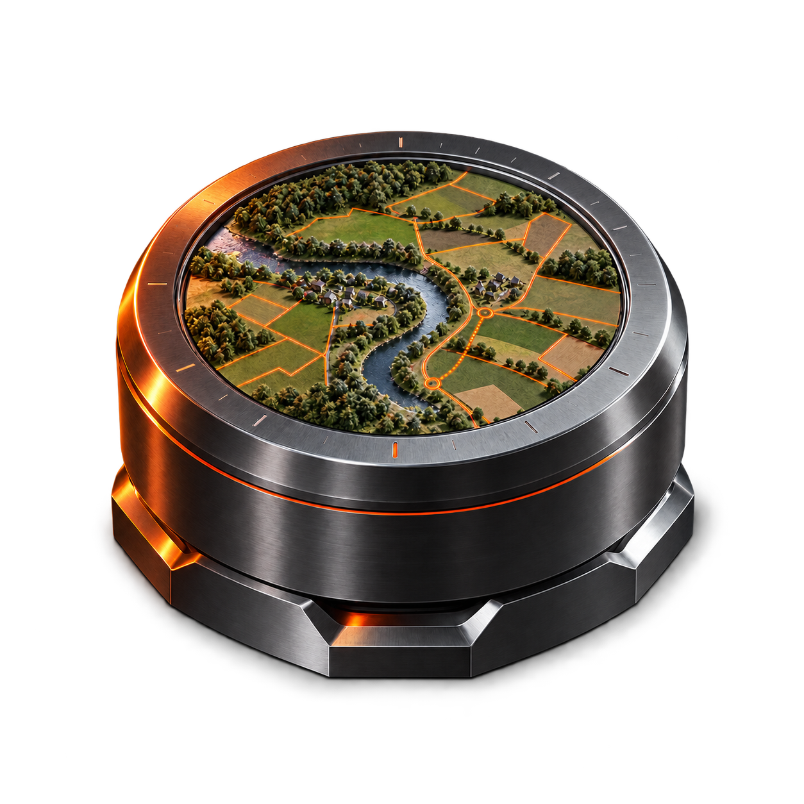
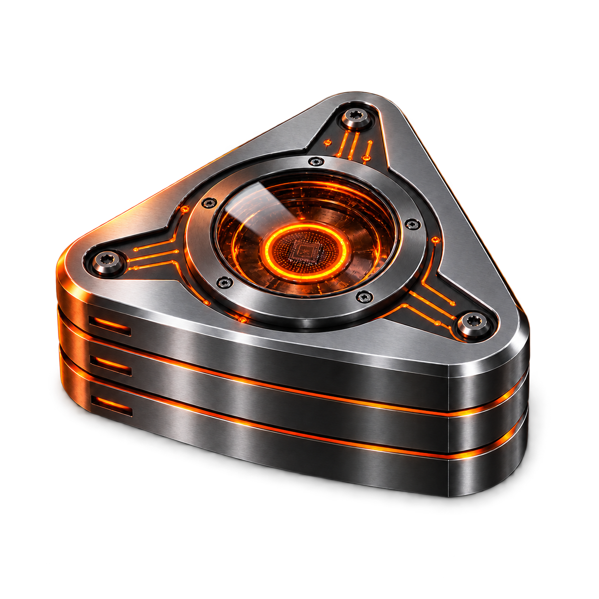
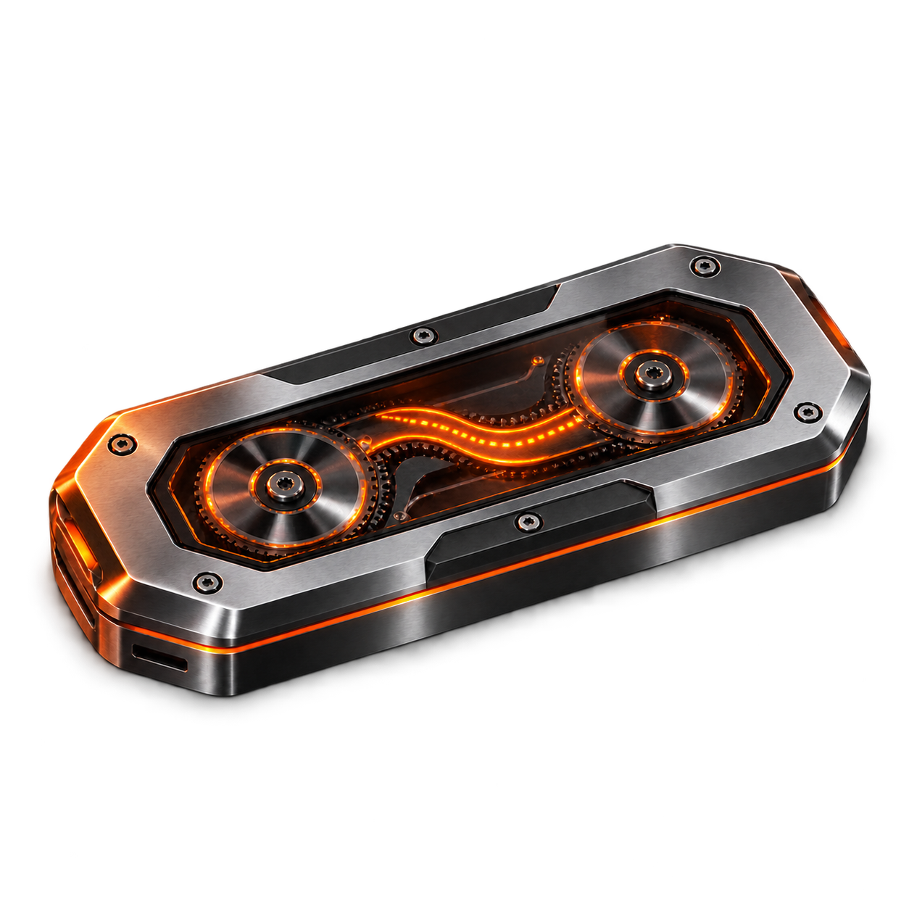
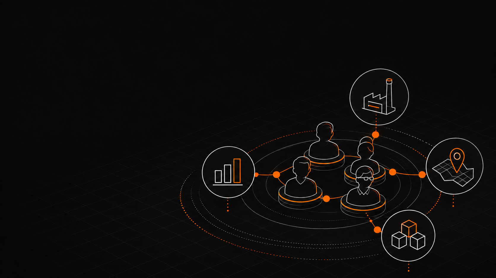
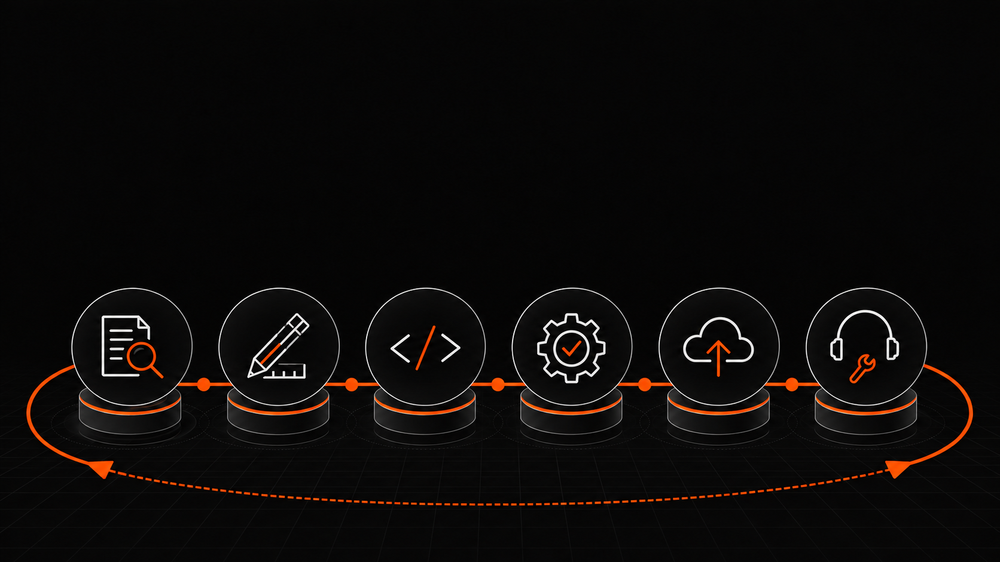
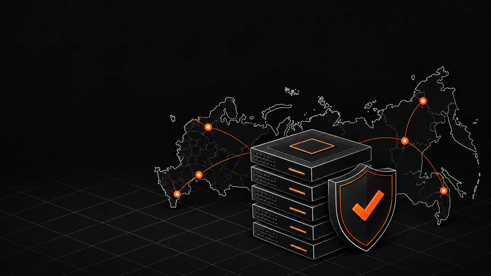
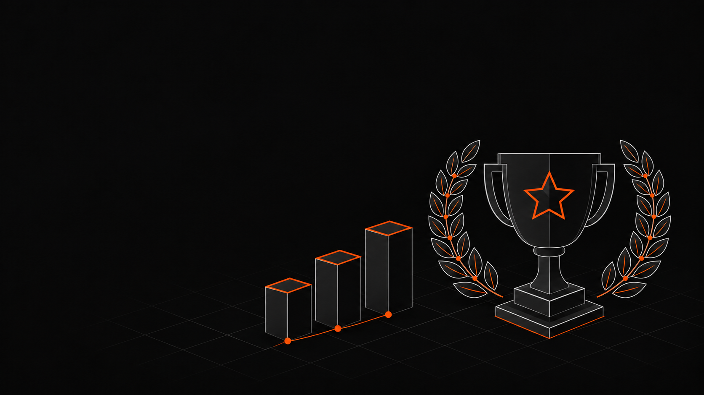
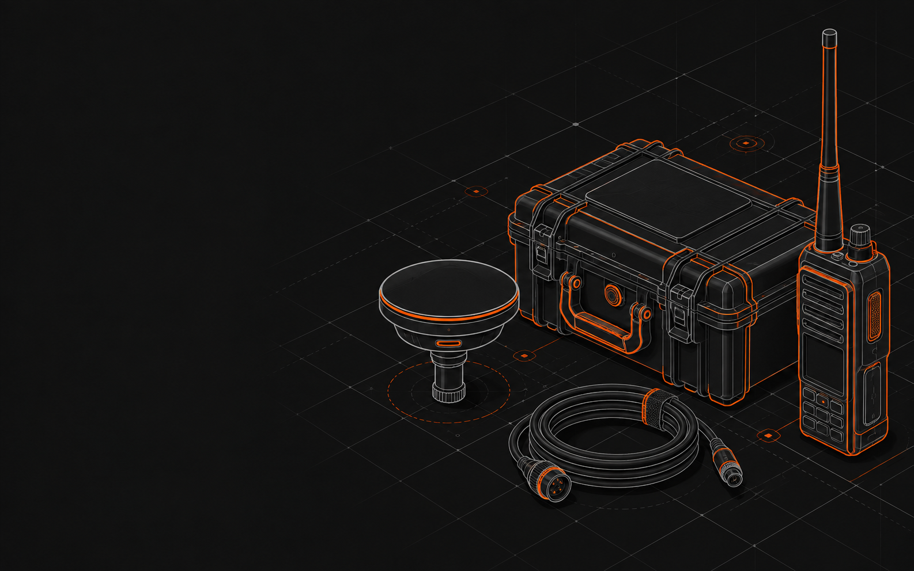
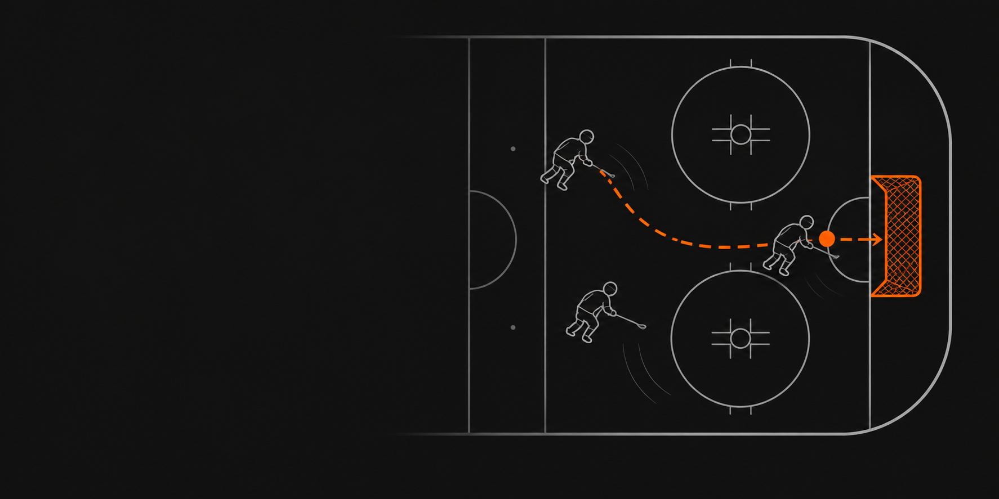

Разработчик геоинформационных и аналитических систем
Ваш технологичный партнёр в реализации национальных целей по цифровой трансформации.
CCloud.ru
ССбер
ККомита
ММинсельхоз России
ННЦИ
AAVA Group
ГГрейнрус
ЛЛУКОЙЛ
VKVK Tech
РРостелеком
Берёмся за проекты, от которых отказались другие
Разрозненные данные, унаследованные системы, нестандартные процессы. Любой объект или территорию выводим на интерактивную карту — из карточки объекта один клик до геопривязки, реестров и нормативно-справочной информации.
Делаем технологии доступными
Создаём цифровые решения для сложных задач — от пространственных данных до разработки и перехода на отечественное ПО.
Все виды деятельности
Цифровая инвентаризация · ГИС · Аналитика
Работаем с пространственными данными
Выводим территорию или объект на интерактивную карту, связываем с реестрами, справочниками и документами.

ИТ-системы · Автоматизация · Поддержка
Разрабатываем программное обеспечение
Создаём оригинальное ПО под задачи заказчика, автоматизируем процессы и сопровождаем системы после внедрения.

Импортозамещение · Oracle и SAP · Лицензии
Переводим на отечественное ПО
Обследуем ИТ-ландшафт, переносим данные и бизнес-логику без потери функционального объёма.
Сильная команда разработки и аналитики
Работаем с органами власти федерального, регионального и муниципального уровня и с крупными промышленными компаниями. Решения соответствуют требованиям регуляторов и замещают устаревшие зарубежные системы.
«Информационные технологии как воздух — необходимое условие жизни»

Сильная мультиотраслевая команда
Соединяем отраслевую экспертизу, аналитику и разработку.

Полный цикл
Методология, дизайн, аналитика, фронтенд, бэкенд, тестирование и внедрение.

Продукты в реестре отечественного ПО
Подходят для закупки государственным заказчиком.

Федеральное признание
Победы и призовые места в профильных конкурсах и премиях.
Собственные продукты на отечественном стеке
Без зависимости от зарубежных вендоров и лицензий.
Все продукты
Б5ГИС
Сбор, хранение, обработка и визуализация пространственных данных на интерактивной карте.
Реестр отечественного ПО № 23338
Б5Аналитика
Расчёты по нормативным методикам, аналитические витрины и дашборды с привязкой к территории.
Реестр отечественного ПО № 34269
СтэкРус
Управление данными и автоматизация сделок купли-продажи продукции.
Реестр отечественного ПО № 18066Превращаем сложные процессы в удобные цифровые продукты
Исследование и данные
Изучаем задачи, собираем материалы из архивов, реестров и съёмки, приводим их к единой системе координат и справочникам.
Понятные интерфейсы
Связываем карту, реестр, таблицы и аналитику. Один объект доступен во всех нужных интерпретациях.
Готово к эксплуатации
Передаём развёрнутый контур, обучаем пользователей, готовим документацию и сопровождаем систему.
Проекты, доведённые до промышленной эксплуатации
Для органов власти и крупных промышленных компаний.
Все проекты


Автоматизировать рутину, чтобы люди сосредоточились на главном
Мы верим, что технологии не просто передают операции программному обеспечению, а делают работу каждого клиента и пользователя понятнее и спокойнее.
Находим узкое место и приносим готовую технологию
Недвижимость · АПК · Госуправление
Банк сельхозземель с девелоперским потенциалом
Выделяем массивы, непригодные для сельхозоборота, но ценные для градостроительного развития.
Транспорт и логистика · Госуправление
Контроль прохода судов в морские порты
Верифицируем материалы обследований и формируем единый банк данных по всем портам.
Что важно знать перед стартом проекта
Не нашли нужный вопрос? Расскажите о задаче — поможем оценить объём работ и формат сотрудничества.
Задать вопросСколько времени занимает проект?
Внедрение готового продукта с настройкой под задачу занимает от 4 до 13 недель. Точные сроки фиксируем после предпроектного обследования.
Что входит в стоимость проекта?
Обследование, проектирование, разработка или настройка, интеграции, развёртывание, обучение и документация.
Развернёте систему в закрытом контуре?
Да. Продукты работают в инфраструктуре заказчика без доступа к интернету. Локальный ИИ-агент Б5AI также не обращается к внешним сервисам.
Ваши продукты в реестре отечественного ПО?
Б5ГИС, Б5Аналитика и СтэкРус внесены в единый реестр российского программного обеспечения.
Можно начать с одной задачи?
Да. Модульная архитектура позволяет внедрять продукты пошагово и добавлять направления без переделки уже работающей части.
Что если данные в плохом состоянии?
Унифицируем форматы и справочники, устраняем расхождения и восстанавливаем недостающие сведения.
Объединяем людей, отрасли и полезные дела
СообществоПомощь бойцам
 Образование
ОбразованиеКонкурс
Клуб Б5
Люди из разных отраслей с общим языком и общим уровнем задач.
↗
ПоддержкаПомощь бойцам
на СВО
Закупаем системы связи, навигации и наблюдения для решения боевых задач.
ОбразованиеКонкурс
«АгроНТРИ»
Вовлекаем школьников в профессии на стыке сельского хозяйства и ИТ.

СпортЦифровая хоккейная лига
Создаём любительскую лигу цифровизаторов России и поддерживаем команды.
Обсудим ваш проект
Оставьте заявку — мы свяжемся с вами и предложим решение.